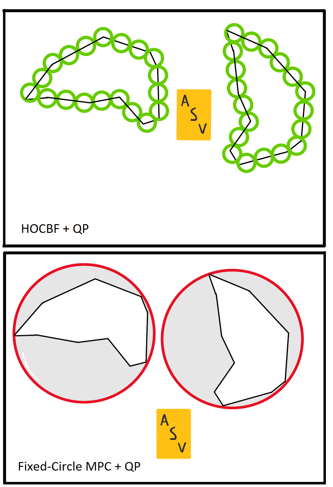

// Robotics Projects

A Romi chassis and homemade 3-DOF manipulator with 1 mm precision. Mechanically, a scissor lift is used for z-axis control, a rack and pinion for the y-axis, and gripper in the x-axis. The software is integrated with forward and inverse kinematics. On the ECE side, a simple breadboard setup is implemented with a buck converter to handle three servos.
Custom designed and fabricated both the Fairyweight and Antweight classes. These Battlebots combine both sophisticated CAD skills with redundant electronics to achieve maximum survivability

Control Barrier Functions essentially serve to enforce safety properties while optimizing computations in the face of constraints utilizing quadratic programing. On the other hand, Model Predictive Control minimizes a cost function for a system, satisfying present constraints while taking a finite horizon into account. Yet, this approach has considerable trouble when complexity increases. This is why CBFs are best used as a substitute or compliment to MPC.